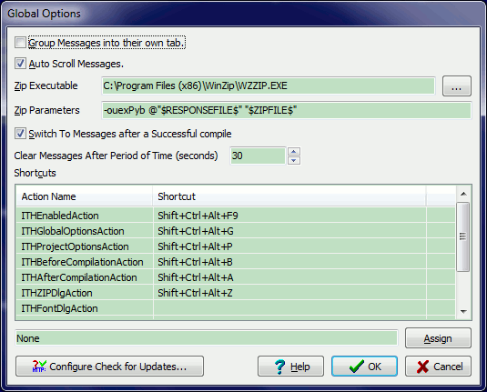
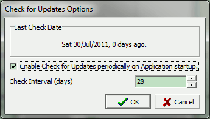

This dialogue allows you to configure the global options that affect the way the application is configured and is applicable to all projects.
Group Messages into their own tab - This places the messages that are output by the add-in and the external tools, to be output into a dedicated message tab rather than among the standard compiler messages.
Auto Scroll Messages - This option scrolls the message view to the last message automatically as they are added;
Zip Executable - Here you can now specify the command line archiving executable you wish to use to "Zip" the project information;
Zip Parameters - Here you can now specify the the archiving parameters to be passed to the above executable. There are three macros which are expanded by the system and they are as follows:
Switch to Messages after a Successful CompileThis option switches to the helper messages if the last compile was successful.
Clear Messages After Period of Time (seconds) - This allows the message list to be cleared if the last compile was more than the specified period of time ago. If you do not want the messages cleared set this to 0 (zero).
This list view allows you wo assign IDE shortcuts to all the actions that the Integrated Testing Helper defines in the IDE.
To assign a shortcut, select the action in the list, enter the shortcut in the shortcut edit control below by pressing the shortcut combination you want to use and then pressing the Assign button.
This option allows you to configure the Check for Updates on application startup by enabling this option (disabled by default) and specifying the interval between checks in days.
The next time the application is started (if Check for Updates has never been run before) the application will check the internet for updates.
These settings are stored in a single INI file named
ITHelper#### Settings for USERNAME on COMPUTER.ini in your Application
Data directory under your profile.